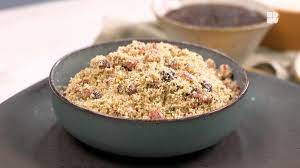

Farofa

Farofa de Calabresa com Passas
Essa receita maravilhosa tem como sua base, manteiga, farinha de mandioca branca, cebola, alho, calabresa e uvas passas.
Ingredientes
- Manteiga
- Cebola
- Alho
- Farinha de Mandioca Branca
- Calabresa
- Uvas Passas
Passo-a-Passo
- Derreter a manteiga numa panela em fogo baixo
- Cortar em cubos pequenos a calabresa e adicionar a panela para fritar
- Triturar o alho e a cebola e adicionar a panela
- Cozinhar tudo em fogo baixo, até que esteja tudo frito e crocante
- Por fim adicionar a farinha e a uva passa, misturando delicadamente
- Pode ser consumido quente ou frio, colocar sal a gosto